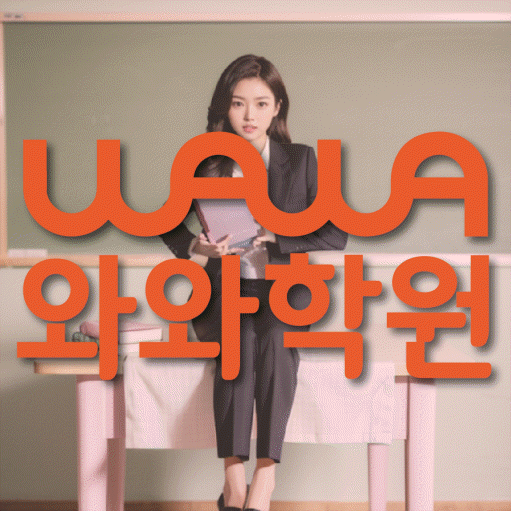

ELEMENTARY ENGLISH
옥길동 초등 영어학원
옥길동 초등 영어학원 선택 전 겨울방학에 영어 기초 개념을 다지는 순서, 기초 문법과 복습·과제 루틴의 현재선, 학교 영어와 가정 복습 순서를 확인하세요.
01 Quick answer
옥길동 초등 영어: 기초 문법과 복습·과제 루틴 점검
옥길동: ‘겨울방학에 영어 기초 개념을 다지는 순서’를 아이 자료로 확인합니다. 확인 자료: 기초 문법 규칙을 적용하고 고친 문장 기록부터 봅니다. 기초 문법은 ‘처음 쓴 문장과 규칙을 확인한 뒤 스스로 고친 부분’, 복습·과제 루틴은 ‘시작·완료 시각, 읽은 문장과 다음에 물어볼 내용을 적은 주간 기록’으로 구분하세요. 이번 주 행동: 주간표에 ‘규칙 한 줄에 맞는 짧은 문장과 고쳐 볼 문장을 나란히 놓고 차이를 설명하기’를 실행할 날짜와 재확인일을 나누어 적으세요. 재확인 기준: ‘낱말이 바뀐 새 문장에서도 같은 규칙을 찾아 고친 이유를 말하는지’를 살피세요.
확인 기준
옥길동 학생 계획에 기초 문법 관련 활동의 실행 여부와 복습·과제 루틴 점검 결과가 모두 있어야 다음 순서를 정할 수 있습니다.


 010-6839-8283010-6839-8283010-6839-8283
010-6839-8283010-6839-8283010-6839-8283학습 답변 요약
핵심 주제는 ‘겨울방학에 영어 기초 개념을 다지는 순서’입니다. 기초 문법과 복습·과제 루틴의 현재선을 확인하고 기초 어휘와 학습 우선순위 관련 활동·점검 기록과 학교·센터 사실을 분리해 살펴봅니다.
옥길동 초등 영어: 겨울방학에 영어 기초 개념을 다지는 순서
옥길동에서 살필 초등 영어 주제는 ‘기초 문법과 복습·과제 루틴의 현재선’입니다. 학생에게 ‘배운 문장 규칙을 말하는 것과 실제 문장에서 알맞은 형태를 고르는 일이 이어지는지’를 묻고 답을 최근 학습 기록과 비교하세요.
‘겨울방학에 영어 기초 개념을 다지는 순서’는 실제 방학 일정에 맞춰 시작 주·중간 확인 주·개학 전 주를 나누는 계획입니다. 시작 주에는 현재 자료를 남기고, 중간에는 분량과 도움받은 지점을 조정하며, 개학 전에는 같은 기능의 새 활동으로 남은 어려움을 확인하세요. ‘겨울방학에 영어 기초 개념을 다지는 순서’에 맞춘 기록에는 기초 문법의 자료 위치와 날짜를 남기세요. 한 가지 행동을 실행하고 재확인 날 새 문장에서 규칙을 적용한 결과를 첫 기록과 비교합니다.
복습·과제 루틴 자료로 기초 문법을 살펴보는 법
많은 자료를 모으기보다 역할이 다른 두 기록을 고르세요. ‘처음 쓴 문장과 규칙을 확인한 뒤 스스로 고친 부분’은 현재선, ‘시작·완료 시각, 읽은 문장과 다음에 물어볼 내용을 적은 주간 기록’은 활동 과정으로 두고 같은 관찰 기간 안에서 각 기록의 날짜를 나누어 확인합니다.
옥길동 기록표를 기초 문법과 복습·과제 루틴 두 칸으로 나누세요. 각 칸에 자료 위치·실행일·재확인일을 적어 두 영역의 기록을 섞지 않습니다.
기초 문법과 복습·과제 루틴: 활동일과 재확인일을 구분하는 방법
옥길동 기록표에는 첫 칸의 확인 항목으로 규칙을 적용한 문장·고친 흔적을, 둘째 칸의 확인 항목으로 주간 계획·완료 여부를 적습니다. 두 칸의 첫 기록과 재확인 결과만 같은 기준으로 비교하세요.
옥길동에서는 기초 문법을 확인할 규칙을 적용한 문장·고친 흔적과 복습·과제 루틴을 확인할 주간 계획·완료 여부를 다른 줄에 둡니다. ‘규칙 한 줄에 맞는 짧은 문장과 고쳐 볼 문장을 나란히 놓고 차이를 설명하기’와 ‘매일 할 최소 분량과 도움을 요청할 항목을 나누고 완료 흔적을 남기기’를 각각 해당 자료에서 짧게 실행하세요. 학교 자료와 평소 자료 각각에 도움받은 지점과 혼자 이어 간 범위를 표시한 뒤 재확인 날짜를 따로 정하세요.
학교 진도 때문에 두 영역의 평소 활동을 모두 미루지 마세요. ‘규칙 한 줄에 맞는 짧은 문장과 고쳐 볼 문장을 나란히 놓고 차이를 설명하기’를 짧게라도 실행하고, 완료 여부·미완료 이유·조정한 분량을 확인할 날짜는 따로 잡습니다.
옥길동 이용 조건과 복습·과제 루틴 상담 항목 분리
학교 영어 자료를 대조할 참고 학교에는 버들초 등이 적혀 있지만, 현재 개설 범위와 학교별 학습 자료 반영 여부는 상담에서 확인해야 합니다.
공개된 옥길동 영어 가능 학년은 초4·초5·초6입니다. 아이의 기초 문법과 복습·과제 루틴 상태는 학습 자료로, 등록 조건은 센터의 현재 답변으로 나누어 판단하세요. 안내된 센터는 와와학습코칭센터 옥길점이며 주소 자료에는 경기 부천시 소사구 옥길로 116 퀸즈파크 A동 7층 718호~719가 기재돼 있습니다. 교습비 조회 자료, 통학 동선과 현재 시간표는 학습 질문과 분리해 확인합니다.
기초 문법에서 복습·과제 루틴으로 이어지는 7일 영어 계획
기준선 자료로 ‘처음 쓴 문장과 규칙을 확인한 뒤 스스로 고친 부분’을 남겨 두세요. 7일 동안 새 문장 규칙 적용 활동을 해 보고 도움을 받은 지점과 혼자 한 지점을 구분합니다.
다음 점검 질문은 ‘낱말이 바뀐 새 문장에서도 같은 규칙을 찾아 고친 이유를 말하는지’입니다. 결과가 불분명하면 새 문장 규칙 적용 활동을 더 작은 단계로 나눠 다시 실행하고, 분명하면 ‘매일 할 최소 분량과 도움을 요청할 항목을 나누고 완료 흔적을 남기기’를 다음 주 행동으로 정합니다. 복습·과제 루틴 관련 행동을 다음으로 정했다면 이 주제를 위한 계획 첫날에 해당 자료에서 막힌 위치를 표시하세요. 한 가지 행동을 실행하고 마지막 날 완료 여부·미완료 이유·조정한 분량을 다시 확인합니다.
복습·과제 루틴 점검 항목과 센터 이용 조건을 나누는 방법
상담 전 ‘기초 문법을 확인할 자료에서 막힌 지점’을 설명할 최근 영어 자료와 가능한 가정 학습 시간을 적어 두세요. ‘규칙 암기와 실제 문장 적용을 어떤 자료로 나누어 확인하는지’와 ‘과제량보다 완료·다시 확인·계획 수정의 주기를 어떻게 살피는지’를 분리해 질문합니다.
설명을 들은 뒤 새 문장 규칙 적용 활동과 재확인 기준인 ‘낱말이 바뀐 새 문장에서도 같은 규칙을 찾아 고친 이유를 말하는지’를 한 줄씩 적습니다. 학습 계획과 등록 조건을 섞지 않아야 비교하기 쉽습니다.
- 아이 자료기초 문법을 확인할 자료 위치와 아이가 도움 뒤 다시 한 흔적
- 학습 일정실행 날짜: ‘매일 할 최소 분량과 도움을 요청할 항목을 나누고 완료 흔적을 남기기’ / 재확인 날짜: ‘한 주 뒤 미완료 이유와 반복된 어려움을 보고 분량을 스스로 조정하는지’
- 재확인기초 문법 기록을 다시 볼 날짜와 그날 비교할 새 문장에서 규칙을 적용한 결과
- 이용 조건영어 가능 학년(초4·초5·초6)·시간표·교습비·통학 동선
02 Parent perspective
옥길동 초등 영어 학부모 상담 상황
아래 옥길동 초등 영어 상담 장면은 실제 이용 후기나 특정 학생의 성과가 아닌 준비용 가상 예시입니다. 학습 결과는 학생의 출발점과 실천 정도에 따라 달라질 수 있습니다.
학교 일정과 평소 학습 일정이 겹친 옥길동 가상 사례입니다. ‘아이의 기초 문법 기록’을 기준으로 기초 문법과 복습·과제 루틴 관련 최소 행동과 완료일을 각각 다른 줄에 둡니다.
옥길동의 와와학습코칭센터 옥길점 상담을 준비하는 가상 장면입니다. 학부모는 영어 가능 학년(초4·초5·초6)과 실제 시간표를 확인하고 ‘교재나 분량보다 먼저 바꿀 학습 절차를 어떤 자료로 판단하는지’를 별도 질문으로 남깁니다.
03 FAQ
옥길동 초등 영어 자주 묻는 질문
학생 자료, 가능 학년과 실제 이용 조건을 나누어 답했습니다.
옥길동 초등 영어에서 ‘기초 문법의 현재선 확인’은 어떤 자료부터 확인하나요?
학습 기록표보다 ‘처음 쓴 문장과 규칙을 확인한 뒤 스스로 고친 부분’이 남은 학습지를 먼저 봅니다. ‘규칙 한 줄에 맞는 짧은 문장과 고쳐 볼 문장을 나란히 놓고 차이를 설명하기’를 해 본 뒤 다음 확인에서는 ‘낱말이 바뀐 새 문장에서도 같은 규칙을 찾아 고친 이유를 말하는지’를 살피세요.
기초 문법과 복습·과제 루틴 진단 기록은 어떻게 나누나요?
두 영역을 한 완료표에 합치지 마세요. 재확인일을 각각 정하고, 그날 기초 문법에는 새 문장에서 규칙을 적용한 결과를, 복습·과제 루틴에는 완료 여부·미완료 이유·조정한 분량을 기록합니다.
기초 문법과 복습·과제 루틴: 규칙을 적용한 문장·고친 흔적과 주간 계획·완료 여부는 어떻게 나눠 확인하나요?
첫 칸에는 기초 문법을 확인한 자료 위치·실행일·새 문장에서 규칙을 적용한 결과를, 둘째 칸에는 복습·과제 루틴을 확인한 자료 위치·실행일·완료 여부·미완료 이유·조정한 분량을 적으세요. 같은 날 확인해도 결과는 자료별로 판단합니다.
상담 전 기초 어휘와 학습 우선순위를 확인하려면 어떤 자료를 가져가나요?
상담 자료로 기초 어휘와 학습 우선순위 관련 활동의 수행 흔적이 보이는 교재와 주간 계획표를 먼저 준비하세요. ‘암기량이 아니라 문장 속에서 낱말을 다시 알아보는지를 어떻게 확인하는지’도 메모해 가세요.
옥길동 초등 영어 상담에서 가능 학년과 참고 학교는 어떻게 확인하나요?
제공된 옥길동 페이지의 영어 학년은 초4·초5·초6입니다. 실제 수업 가능 여부는 상담 시점의 시간표로 확인하세요. 확인 가능한 참고 학교는 버들초 등입니다. 이 학교명이 모든 수업 범위의 개설을 뜻하지 않으므로 학교 진도표를 가져가 반영 방식을 확인하세요.
04 Related
옥길동 관련 학원·상담 페이지
같은 지역의 과목 조합과 학년 카테고리, 앞뒤 지역 안내를 함께 확인하세요.